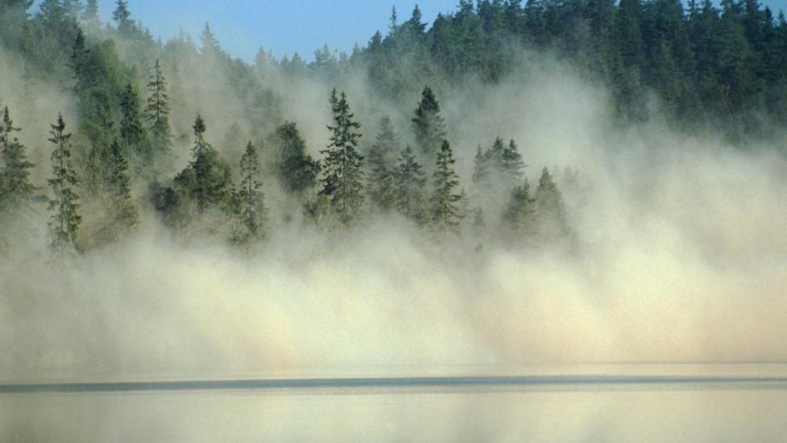

Acid rain
Harmful gases like nitrogen oxides and sulfur oxides are released into the atmosphere during the burning of fossil fuels. When it rains, the water droplets combine with these air pollutants, becomes acidic and then falls on the ground in the form of acid rain. Acid rain can cause great damage to human, animals, and crops.